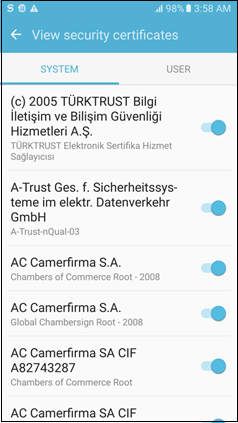
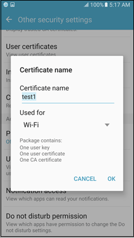
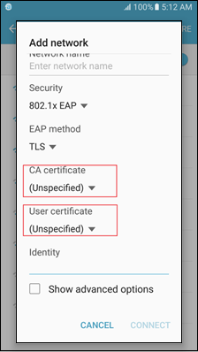

Trust anchors
Trust Anchors are trusted CA (Certification Authority) root certificates used by apps – such as Browser and Email – to validate server certificates and app-specific operations. Examples include secure email using S/MIME, or verify digitally-signed documents.
Knox devices have per-user Trusted Credentials stores that maintain lists of trust anchors verified by the platform or container.
How Android Trust Anchor work
Android comes with a set of preloaded CA root certificates trusted by the system. Users can install new certificates and disable the preloaded CA Certificates from Settings Security Trusted Credentials. Users can only install new certificates to the system if the device lock screen security is other than none or swipe to unlock.

Android has three credential storage mechanisms:
- Default credential storage
- Wi-Fi credential storage
- VPN and apps credential storage
Default credential storage
Default credential storage contains all system preloaded CA root certificates. Users can install or remove other CA root certificates to and from this storage using Settings Security Trusted Credentials.
Users cannot remove preloaded certificates, but can disable them if necessary. Users can install only CA root certificates in this keystore.
Default storage divides its credentials into the following two groups.
- System group that contains all preloaded CA certificates
- User group that contains the certificates installed manually by the user
The default credential storage is the main credential storage available on Android. The credentials installed on this storage are the Trust Anchors used by apps. By default, all apps use credentials installed on this storage, however, some apps can use custom credential storages.
This storage is user scope, which means that in a multi-user scenario, each user has their own default credential storage. Installing credentials to the default credential storage of one user does not affect other users. The Knox container also has its own default credential storage.
Wi-Fi Credential Storage
The Wi-Fi credential storage stores the credentials for authentication on Wi-Fi EAP connections. User can install credentials to this storage using Settings Security Trusted Credentials.

Installing credentials using Settings for Wi-Fi also transparently installs them in the default credential storage. Users can view these credentials using the View Security Certificates option.
When you set up an EAP connection, only credentials installed on Wi-Fi credential storage can be used.

The Wi-Fi credential storage is global scope, which means that there is only one Wi-Fi credential storage in the device. In a multi-user scenario, installing credentials to the Wi-Fi credential storage affects all users, including the Knox container. Since the storage is global scope, only calls from the Owner space can manage the Wi-Fi credential storage.
VPN credential storage
Certificates installed into VPN credential storage are used to authenticate VPN connections. User can install credentials to this storage using Settings Security Trusted Credentials.
When you set up an Android VPN profile, only credentials installed to the VPN and Apps storage can be used.
Private credentials on VPN and Apps storage can be used by Android apps. When apps request the usage of a private credential, the user can deny or allow access.
Similar to Wi-Fi credential storage, when installing credentials to the VPN and App storage using Settings Security Trusted Credentials, these credentials are transparently installed to the default credential storage.
This storage is in user scope, which means that in a multi-user scenario each user has their own VPN and Apps credential storage, and installing credentials to the VPN and Apps credential storage of one user does not affect other users. Knox Workspace also has it own VPN and Apps credential storage.
Knox Trust Anchor enhancements
This topic describes how to use MDM APIs to install and remove credentials to manage trusted and untrusted credentials lists in Samsung Knox devices.
Security policies
This group of MDM policies provides APIs to remotely control security functionality such as certificate installation, device encryption, and wipe.
There are four APIs from SecurityPolicy group related to Trust Anchor. These four APIs are in User Scope, which means that it is also possible to enforce them only for container if needed.
SecurityPolicy.installCertificateToKeystore(String type, byte[] value, String name, String password, int keystore)SecurityPolicy.deleteCertificateFromKeystore(CertificateInfo certInfo, int keystore)SecurityPolicy.getCertificatesFromKeystore(int keystore)SecurityPolicy.resetCredentialStorage()
Certificate policies
This group of policies provides APIs to control certificate security. It is possible to disable certificates, restrict installation of user certificates, notify the user about certificate information and failures, and enable certificate revocation status check in the system library.
Trusted and untrusted certificates lists
Knox enhances Android Trust Anchor controls by offering APIs to manage trusted and untrusted certificates lists.
When a certificate is added to the trusted certificates list only certificates that are signed by the certificate in the trusted list can be installed. Also, the certificates previously installed by user which are not trusted are removed from the system. Such certificates are quarantined, if in the future they become trusted again (if administrator adds this certificate CA to the list or disables the policy cleaning the trusted CA list).
The trusted list works like an allowlist, once you add a certificate to this list all other certificates installed by user are removed. Only the ones signed by certificates in the trusted list and preloaded certificates remain trusted (to disable preload certificates it is needed to use the untrusted certificates list). If a certificate becomes trusted again it will be re-installed. Only CA certificates can be added to the trusted list.
The following APIs are used to manage trusted certificates list:
CertificatePolicy.addTrustedCaCertificateList(List certificates)CertificatePolicy.clearTrustedCaCertificateList()CertificatePolicy.getTrustedCaCertificateList()CertificatePolicy.removeTrustedCaCertificateList(List certificates)
The untrusted certificates list can be used to mark specific certificates as untrusted and does not allow them or any other that has been issued by them, to be installed in the system. Also, untrusted certificates previously installed are removed from the system, if they become trusted again in the future (when administrator removes this certificate from the untrusted list), they are re-installed.
This list works as a blocklist where certificates in the untrusted list are not permitted and all others are permitted.
CertificatePolicy.addUntrustedCertificateList(List certificates)CertificatePolicy.clearUntrustedCertificateList()CertificatePolicy.getUntrustedCertificateList()CertificatePolicy.removeUntrustedCertificateList(List certificates)
For security reasons, the untrusted list takes precedence over the trusted list. When a certificate is added to untrusted list, it is removed from the system even if it is present in the trusted list.
- Adding certificates to trusted certificates lists does not install the certificates
- From Knox 2.6 onwards, trusted and untrusted certificates lists are in “Wi-Fi credential storage”, which means that different lists can be enforced for each user and for containers
- For versions Knox 2.5 and below, certificates are in Global Scope and can be enforced only from the owner space. To keep backwards compatibility, if these lists are applied from the owner space they still work as Global Scope and will be enforced for all users (including container), although they are classified as user scope.
Knox Trust Anchor Examples
Install credentials
The following API allows credentials installation without user interaction to any of the Android Credential Storages, such as Default, Wi-Fi, or VPN and Apps.
SecurityPolicy.installCertificateToKeystore (String type, byte[] value, String name, String password,int keystore)
Installed credentials are automatically trusted by the system if they are not blocked by the trusted or untrusted certificate list.
Remove credentials
The following API allows credentials removal without user interaction to any of the Android Credential Storages, such as Default, Wi-Fi, or VPN and Apps.
SecurityPolicy.deleteCertificateFromKeystore (CertificateInfo certInfo, int keystore)
Manage trusted certificate lists
The following APIs allow control over the trusted certificates list:
CertificatePolicy.addTrustedCaCertificateList(List<X509Certificate> certificates) CertificatePolicy.removeTrustedCaCertificateList(List<X509Certificate> certificates)
To use these APIs, you must have the com.samsung.android.knox.permission.KNOX_SECURITY permission which has a protection level of signature.
Full Example
The following code shows how to manage credentials installation and trusted certificates list on user space.
- Get instance of CertificatePolicy and SecurityPolicy:
EnterpriseDeviceManager edm = (EnterpriseDeviceManager) Context.getSystemService(EnterpriseDeviceManager.ENTERPRISE_POLICY_SERVICE);
SecurityPolicy securityPolicy = edm.getSecurityPolicy();
CertificatePolicy certPolicy = CertificatePolicy.getInstance(Context);
- Install two certificates:
String cert1 = "/sdcard/example1.crt";
String cert2 = "/sdcard/example2.crt";
String cert3 = "/sdcard/example3.crt";
/**
* Install cert1 and cert2, as Trust List is empty both certs will be
* installed and they are trusted by the system.
_/
byte[] cert1Data = getByteArray(cert1);
boolean result = securityPolicy.installCertificateToKeystore(SecurityPolicy.TYPE_CERTIFICATE, cert1Data, "alias1", "cert_password", SecurityPolicy.KEYSTORE_DEFAULT);
byte[] cert2Data = getByteArray(cert2);
result = securityPolicy.installCertificateToKeystore(SecurityPolicy.TYPE_CERTIFICATE, cert2Data, "alias2", "cert_password", SecurityPolicy.KEYSTORE_DEFAULT);
- Add one certificate to the Trusted List:
/*_
* After adding a certificate to the Trust List, only system pre-loaded
* certificates and certificates in the trusted list will be trusted.
* In this case cert2 will be uninstalled, as it is not trusted anymore
* Once it becomes trusted again it will be automatically reinstalled.
_/
List trustedList = createX509CertificateList(cert1);
certPolicy.addTrustedCaCertificateList(trustedList);
- Installation of a certificate that is not on the Trusted List fails:
/*_
* Installation of cert3 will fail as it is not in the Trusted
* Credentials List.
*/
byte[] cert3Data = getByteArray(cert3);
result = securityPolicy.installCertificateToKeystore(SecurityPolicy.TYPE_CERTIFICATE, cert3Data, "alias3", "cert_password",SecurityPolicy.KEYSTORE_DEFAULT);
Pre-loaded system certificates
The following examples illustrate how to enable or disable pre-loaded system certificates in user(personal) space and container space:
B
The following sample code illustrates how to disable all pre-loaded system certificates in user space (personal space):
-
Get instances of SecurityPolicy and CertificatePolicy:
EnterpriseDeviceManager edm = (EnterpriseDeviceManager)getSystemService(EnterpriseDeviceManager.ENTERPRISE_POLICY_SERVICE); SecurityPolicy securityPolicy = edm.getSecurityPolicy(); CertificatePolicy certPolicy = CertificatePolicy.getInstance(context); -
Get all system certificates:
List<CertificateInfo> list = securityPolicy.getCertificatesFromKeystore (SecurityPolicy.KEYSTORE_DEFAULT); ArrayList<CertificateInfo> systemCerts = new ArrayList<CertificateInfo>(); for(CertificateInfo cert : list) { if(cert.getSystemPreloaded()) { systemCerts.add(cert); } } -
Convert CertificateInfo list to X509Certificate list:
ArrayList<X509Certificate> X509SystemCerts = new ArrayList<X509Certificate>(); for(CertificateInfo systemCert : systemCerts) { if(systemCert.getCertificate() instanceof X509Certificate) { X509SystemCerts.add((X509Certificate) systemCert.getCertificate()); } } -
Disable system pre-loaded certificates using Untrusted Certificates List:
boolean result = certPolicy.addUntrustedCertificateList(X509SystemCerts);
Example 2
The following sample sample code illustrates how to enable all previously disabled system certificates in user space (personal space):
-
Get instance of CertificatePolicy:
CertificatePolicy certPolicy = CertificatePolicy.getInstance(context); -
Re-enable system pre-loaded certificates cleaning Untrusted Certificates List:
boolean result = certPolicy.clearUntrustedCertificateList();
Example 3
The following sample code illustrates how to disable all pre-loaded system certificates for container:
-
Get instances of SecurityPolicy and CertificatePolicy from KnoxContainerManager:
EnterpriseKnoxManager ekm = EnterpriseKnoxManager.getInstance(); // When you create container successfully, containerID will be returned // using intent. Use this containerID in below API. KnoxContainerManager kcm = ekm.getKnoxContainerManager(Context, containerID); SecurityPolicy securityPolicy = kcm.getSecurityPolicy(); CertificatePolicy certPolicy = kcm.getCertificatePolicy(); -
Get all system certificates:
List<CertificateInfo> list = securityPolicy.getCertificatesFromKeystore (SecurityPolicy.KEYSTORE_DEFAULT); ArrayList<CertificateInfo> systemCerts = new ArrayList<CertificateInfo>(); for(CertificateInfo cert : list) { if(cert.getSystemPreloaded()) { systemCerts.add(cert); } } -
Convert CertificateInfo list to X509Certificate list:
ArrayList<X509Certificate> X509SystemCerts = new ArrayList<X509Certificate>(); for(CertificateInfo systemCert : systemCerts) { if(systemCert.getCertificate() instanceof X509Certificate) { X509SystemCerts.add((X509Certificate)systemCert.getCertificate()); } } -
Disable system pre-loaded certificates using Untrusted Certificates List:
boolean result = certPolicy.addUntrustedCertificateList(X509SystemCerts);
Example 4
The following sample code illustrates how to re-enable all pre-loaded system certificates for container:
-
Get instances of CertificatePolicy from KnoxContainerManager:
EnterpriseKnoxManager ekm = EnterpriseKnoxManager.getInstance(); // When you create container successfully, containerID will be returned // using intent. Use this containerID in below API. KnoxContainerManager kcm = ekm.getKnoxContainerManager(Context, containerID); CertificatePolicy certPolicy = kcm.getCertificatePolicy(); -
Re-enable system pre-loaded certificates cleaning Untrusted Certificates List:
boolean result = certPolicy.clearUntrustedCertificateList();
Monitor trusted credential store using audit logs
The following examples illustrate how to monitor trusted credential store using audit logs:
Example - Dump audit logs for trusted credentials events
To use the APIs illustrated in this example you must have the:
- com.samsung.android.knox.permission.KNOX_SECURITY
- com.samsung.android.knox.permission.KNOX_CERTIFICATE
- com.samsung.android.knox.permission.KNOX_AUDIT_LOGpermissions which have a protection level of signature.
-
Get instances of AuditLog, SecurityPolicy, and CertificatePolicy:
EnterpriseDeviceManager edm = EnterpriseDeviceManager.getInstance(context); SecurityPolicy securityPolicy = edm.getSecurityPolicy(); AuditLog auditLogService = AuditLog.getInstance(Context); CertificatePolicy certPolicy = CertificatePolicy.getInstance(context); // get SecurityPolicy also for container, to trigger container events EnterpriseKnoxManager ekm = EnterpriseKnoxManager.getInstance(); // When you create container successfully, containerID will be returned // using intent. Use this containerID in below API. KnoxContainerManager kcm = ekm.getKnoxContainerManager(Context, containerID); SecurityPolicy containerSecurityPolicy = kcm.getSecurityPolicy(); -
Enable AuditLog:
boolean ret = auditLogService.enableAuditLog(); -
Trigger some Trusted credentials events to check to AuditLog messages later:
String filePath = "/sdcard/class3.crt"; byte[] certData = getByteArray(filePath); boolean result = securityPolicy.installCertificateToKeystore (SecurityPolicy.TYPE_CERTIFICATE, certData, "alias", "cert_password", SecurityPolicy.KEYSTORE_FOR_WIFI); result = containerSecurityPolicy.installCertificateToKeystore (SecurityPolicy.TYPE_CERTIFICATE, certData, "alias", "cert_password", SecurityPolicy.KEYSTORE_DEFAULT); X509Certificate cert; try { CertificateFactory certFactory = CertificateFactory.getInstance("X.509"); InputStream in = new ByteArrayInputStream(certData); cert = (X509Certificate) certFactory.generateCertificate(in); } catch (CertificateException certEx) { Log.w(TAG, "certificate factory exception", certEx); return; } ArrayList<X509Certificate> X509CertsList = new ArrayList<X509Certificate>(); X509CertsList.add(cert); result = certPolicy.addUntrustedCertificateList(X509CertsList); result = certPolicy.removeUntrustedCertificateList(X509CertsList); -
Before get the logs, register a BroadcastReceiver to know when AuditLog dump file is finished:
BroadcastReceiver receiver = new BroadcastReceiver() { @Override public void onReceive(Context context, Intent intent) { if(intent.getAction().equals(AuditLog.ACTION_DUMP_LOG_RESULT)){ // do something when log file is ready } } } IntentFilter receiveFilter = new IntentFilter(); receiveFilter.addAction(AuditLog.ACTION_DUMP_LOG_RESULT); Context.registerReceiver(receiver, receiveFilter, "com.samsung.android.knox.permission.KNOX_AUDIT_LOG", null); -
Dump AuditLog file:
if (auditLogService.isAuditLogEnabled()) { String filterRegex = null; String path = "/mnt/sdcard/dump.gz"; File dFile = new File(path); // Check if the file already exist if (dFile.exists()) { dFile.delete(); } ParcelFileDescriptor outputFile = null; try { outputFile = ParcelFileDescriptor.open(dFile, ParcelFileDescriptor.MODE_READ_WRITE | ParcelFileDescriptor.MODE_CREATE | ParcelFileDescriptor.MODE_TRUNCATE); auditLogService.dumpLogFile(-1, -1, filterRegex, outputFile); } catch (FileNotFoundException e) { Log.w(TAG, "FileNotFoundException: " + e); } catch (SecurityException e) { Log.w(TAG, "SecurityException: " + e); } } else { Log.w(TAG, "AuditLog is not Running "); } -
Check the log message in the dumped file.
Log File analysis
The following log messages are present on the AuditLog file after triggering the events in Step 3 (see above):
Characters in RED refers to the UserId of the user that triggered an AuditLog event, 0 is the Owner User, 100 is the Container, -1 refers to Global Scope events related to all users. The descriptions listed in the following section are not part of the audit messages, instead they are comments that explain the message.
| Log message | Description |
|---|---|
| 1452614882432 5/2/1/3585/0/AuditLogService/AuditLog status has changed to enable | This event refers to the enabling AuditLog |
| 1452614952723 5/1/1/3585/0/SecurityPolicy/Admin com.samsung.edmtest1 has requested to install a certificate. Keystore(s) : Wi-Fi, Name : valid | This event refers to the call securityPolicy.installCertificateToKeystore(..) |
| 1452614952753 5/1/1/3585/-1/KeyStore/Installing certificate succeeded. Keystore : Wi-Fi, Alias : CACERT_valid, Subject : CN=CAcert Class 3 Root, OU=http://www.CAcert.org, O=CAcert Inc., Issuer : OID.1.2.840.113549.1.9.1=#1612737570706F7274406361636572742E6F7267, CN=CA Cert Signing Authority, OU=http://www.cacert.org, O=Root CA [logged by: system/android.uid.system:1000, pid: 3585] | This event is triggered when certificate from call securityPolicy.installCertificateToKeystore(..) is actually installed in the system. -1 is logged as UserId because the call requested installation for Wi-Fi Credential Storage that is Global Scope. |
| 1452614997098 5/1/1/3585/100 /SecurityPolicy/Admin com.samsung.edmtest1 has requested to install a certificate. Keystore(s) : Default, Name : valid | This refers to call containerSecurityPolicy.installCertificateToKeystore(…), notice that because installation was requested to the container UserId is 100 here. |
| 1452614997220 5/1/1/32687/100 /KeyChainService/Installing certificate succeeded. Keystore : Default, Alias : user:e5662767.0, Subject : CN=CAcert Class 3 Root, OU=http://www.CAcert.org, O=CAcert Inc., Issuer : OID.1.2.840.113549.1.9.1=#1612737570706F7274406361636572742E6F7267, CN=CA Cert Signing Authority, OU=http://www.cacert.org, O=Root CA | This event is triggered when certificate from call containerSecurityPolicy.installCertificateToKeystore(..) is actually installed in the system. |
| 1452615083751 5/1/1/3585/0/CertificatePolicy/Admin com.samsung.edmtest1 has added a certificate to the untrusted DB. Subject : CN=CAcert Class 3 Root, OU=http://www.CAcert.org, O=CAcert Inc., Issuer : OID.1.2.840.113549.1.9.1=#1612737570706F7274406361636572742E6F7267, CN=CA Cert Signing Authority, OU=http://www.cacert.org, O=Root CA | This refers to call certPolicy.addUntrustedCertificateList (…). Message says that a certificate was added to Untrusted Certificates List. |
| 1452615083860 5/1/1/3585/-1/KeyStore/Deleting certificate succeeded. Keystore : Wi-Fi, Alias : CACERT_valid, Subject : CN=CAcert Class 3 Root, OU=http://www.CAcert.org, O=CAcert Inc. [logged by: system/android.uid.system:1000, pid: 3585] | This log is a side-effect of adding the certificate to Untrusted Certificates List. The certificate previously installed is being removed from Wi-Fi Credential Storage as it not trusted anymore. |
| 1452615087139 5/1/1/32687/100/KeyChainService/Deleting certificate succeeded. Keystore : Default, Alias : user:e5662767.0, Subject : CN=CAcert Class 3 Root, OU=http://www.CAcert.org, O=CAcert Inc., Issuer : OID.1.2.840.113549.1.9.1=#1612737570706F7274406361636572742E6F7267, CN=CA Cert Signing Authority, OU=http://www.cacert.org, O=Root CA | This log is a side-effect of adding the certificate to Untrusted Certificates List. The certificate previously installed is being removed from container’s Default Credential Storage as it not trusted anymore. |
| 1452615091257 5/1/1/3585/0/CertificatePolicy/Admin com.samsung.edmtest1 has removed a certificate from the untrusted DB. Subject : CN=CAcert Class 3 Root, OU=http://www.CAcert.org, O=CAcert Inc., Issuer : OID.1.2.840.113549.1.9.1=#1612737570706F7274406361636572742E6F7267, CN=CA Cert Signing Authority, OU=http://www.cacert.org, O=Root CA | This refers to call certPolicy.removeUntrustedCertificateList (…). Message says that a certificate was removed from Untrusted Certificates List. |
| 1452615091322 5/1/1/3585/-1 /KeyStore/Installing certificate succeeded. Keystore : Wi-Fi, Alias : CACERT_valid, Subject : CN=CAcert Class 3 Root, OU=http://www.CAcert.org, O=CAcert Inc., Issuer : OID.1.2.840.113549.1.9.1=#1612737570706F7274406361636572742E6F7267, CN=CA Cert Signing Authority, OU=http://www.cacert.org, O=Root CA [logged by: system/android.uid.system:1000, pid: 3585] | This log is a side-effect of removing the certificate from Untrusted Certificates List. The certificate previously removed when it was added to the Untrusted Certificates List is being reinstalled to Wi-Fi Credential Storage as it is trusted again. |
| 1452615091473 5/1/1/32687/100 /KeyChainService/Installing certificate succeeded. Keystore : Default, Alias : user:e5662767.0, Subject : CN=CAcert Class 3 Root, OU=http://www.CAcert.org, O=CAcert Inc., Issuer : OID.1.2.840.113549.1.9.1=#1612737570706F7274406361636572742E6F7267, CN=CA Cert Signing Authority, OU=http://www.cacert.org, O=Root CA | This log is a side-effect of removing the certificate from Untrusted Certificates List. The certificate previously removed when it was added to the Untrusted Certificates List is being reinstalled to Container’s Default Credential Storage as it is trusted again. |
Although AuditLog is classified as a User scope feature, in the log messages above there are some messages from container. Prior to Knox 2.6 AuditLog was Global Scope and could be enforced only from Owner space. To keep backwards compatibility, when AuditLog is applied from Owner space it still working as Global Scope. Logs will contain info from all users and Workspaces owned by the admin that enabled the feature.
On this page
Is this page helpful?